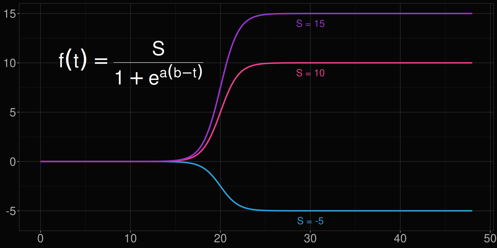
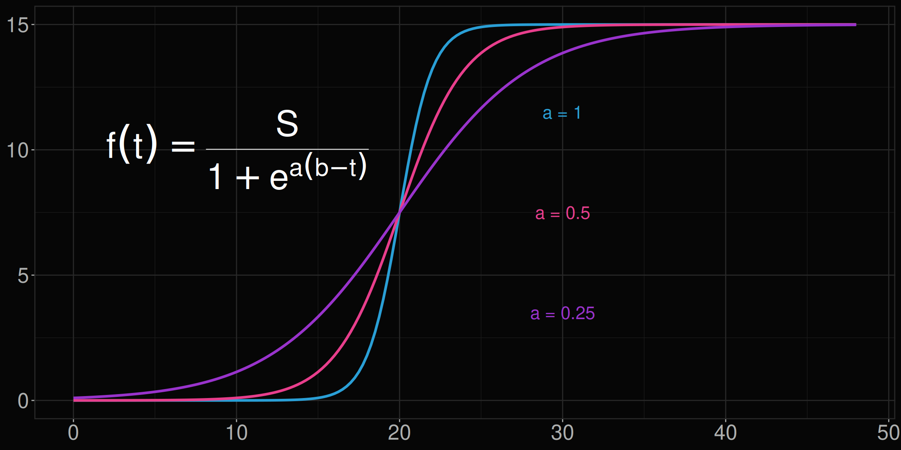
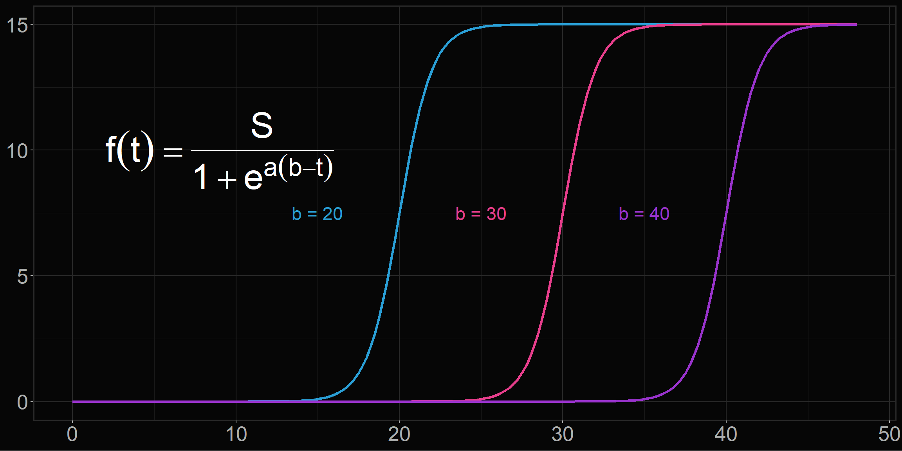
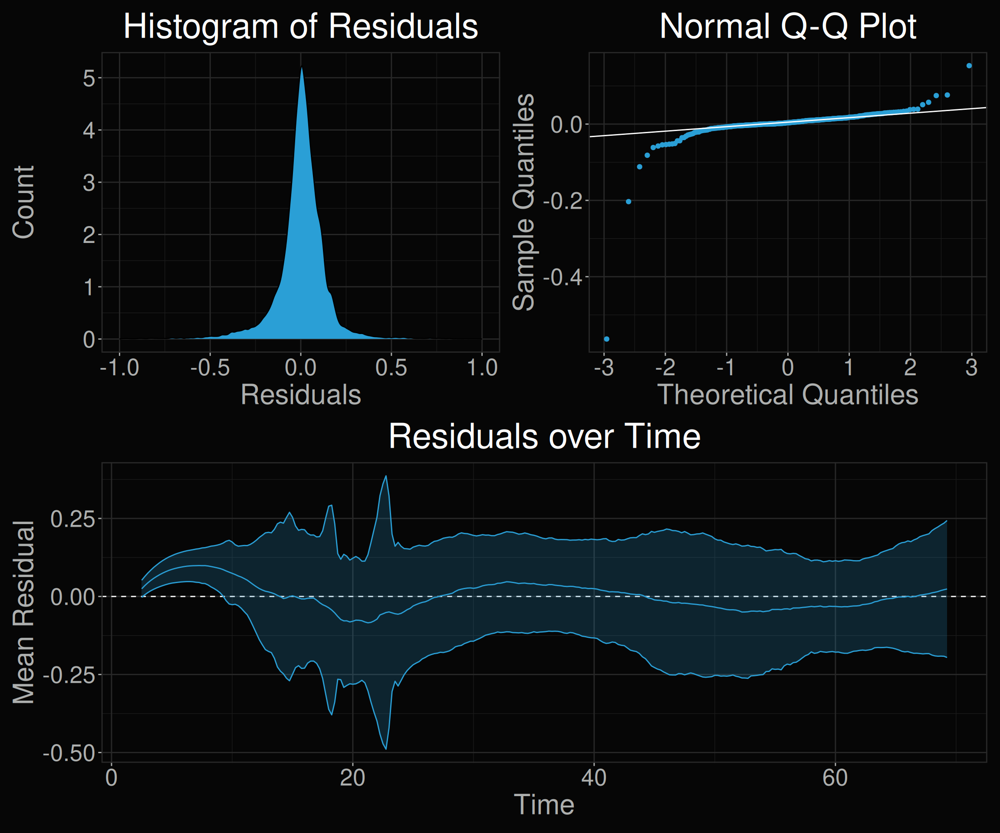
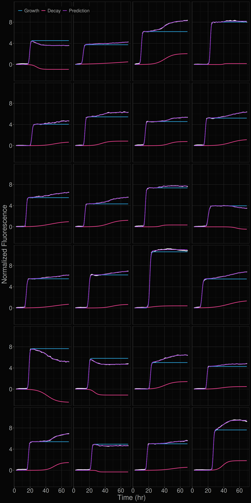
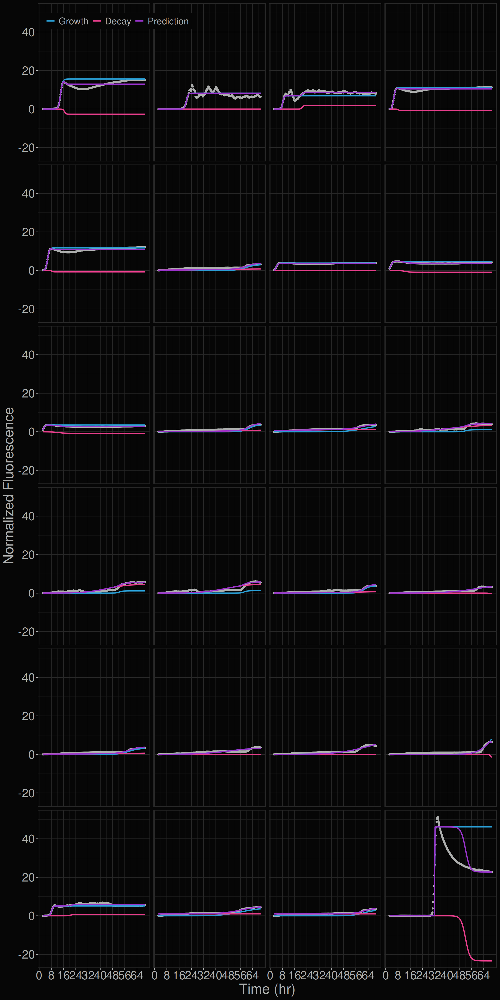
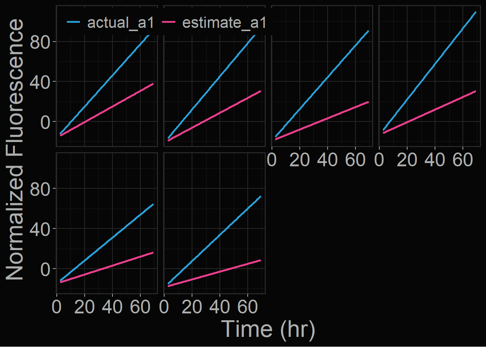

Modeling RT-QuIC Kinetics
Introduction
This R project contains code for modeling the kinetics of the prion protein misfolding in the RT-QuIC assay. This misfolding is modeled using a two-component model, with the primary and secondary phases of the reaction being modeled separately.
The model is described by the following function, \(g_1\) and \(g_2\):
\[ g_1(t)=\frac{S_1}{1+e^{a_1(b_1-\text{t})}} \hspace{3em} g_2(t)=\frac{S_2}{1+e^{a_2(b_2-\text{t})}} \]
where \(S_1\) and \(S_2\) represent the primary and secondary phase asymptotes, respectively. Parameters \(a_1\) and \(a_2\), modulate the steepness of the inflection point; \(b_1\) and \(b_2\) represent the midpoint of the inflection point of the curves. The model can be described as the sum of these two logistic functions.
\[ f(t)=g_1(t)+g_2(t) \]
Example Graph
How do the parameters affect the curves?



The Training Data
The data is a time series of fluorescence measurements from a single positive sample over many reactions. The data is normalized to the eighth time-point, and the time-points are evenly spaced by 15 min between 0 and 72 hours. Only time-points \(t>0\) were included to account for the artificially increased fluorescence values before the reaction has reached thermal equillibrium.
Normalizing the Data
The data is first smoothed using a rolling mean, and then normalized to the eighth time point. The first and second derivatives were then estimated from the normalized data which made finding time points of inflection easier.
normalize <- function(df, x, y, norm_point, groups, window = 3, smooth = 10, zero = TRUE) {
df %>%
mutate(
norm = rollmean(!!sym(y), smooth, na.pad=TRUE),
norm = norm / norm[norm_point] - ifelse(zero, 1, 0),
deriv = (lead(norm, window) - lag(norm, window)) / (lead(!!sym(x), window) - lag(!!sym(x), window)),
deriv2 = (lead(deriv, window) - lag(deriv, window)) / (lead(!!sym(x), window) - lag(!!sym(x), window)),
.by = all_of(groups)
)
}Example of Normalized Data

Estimating Starting Values
The model uses the nls() function from the stats package. Because this is a parametric model, coefficients are first estimated using certain landmarks of the raw data.
estimate_params <- function(df) {
df %>%
mutate(
max_time = map_dbl(data, \(x) max(x$time, na.rm=TRUE)),
# Primary Phase Estimations
growth_scale = map_dbl(data, \(x) max(x$deriv, na.rm=TRUE)),
time_to_growth_mid = map_dbl(data, \(x) x$time[which.max(x$deriv)][1]),
time_to_min_deriv2 = map_dbl(data, \(x) x$time[which.min(x$deriv2)][1]),
time_to_growth_max = map2_dbl(data, time_to_min_deriv2, \(x, ttmd2) x$time[x$time > ttmd2 & x$deriv2 > 0][1]),
peak_norm = map2_dbl(data, time_to_growth_max, \(x, ttgm) x$norm[x$time == ttgm][1]),
# Secondary Phase Estimations
max_equillibrium = map2_dbl(data, time_to_growth_max, \(x, ttgm) max(x$norm[x$time >= ttgm], na.rm=TRUE)),
min_equillibrium = map2_dbl(data, time_to_growth_max, \(x, ttgm) min(x$norm[x$time >= ttgm], na.rm=TRUE)),
max_decay = max_equillibrium - peak_norm,
min_decay = min_equillibrium - peak_norm,
equillibrium = ifelse(abs(min_decay) > max_decay, min_equillibrium, max_equillibrium),
time_to_equillibrium = map2_dbl(data, equillibrium, \(x, e) x$time[x$norm == e][1]),
peak_decay = equillibrium - peak_norm,
time_to_decay = time_to_equillibrium - time_to_growth_max,
time_to_decay_mid = time_to_growth_max + time_to_decay / 2,
decay_slope = replace_na(peak_decay / time_to_decay, 0),
decay_scale = abs(decay_slope)
)
}Fitting the Model
The model first attempts to fit a double sigmoidal model to the data using the landmarks shown above. If this fails, the function then reverts to a single sigmoidal model. It then re-attempts the double sigmoidal fit using the coefficients generated from the single model. If that fails again, the model returns just the single sigmoidal model.
fit_model <- function(
data, peak_norm, time_to_growth_mid, growth_scale, peak_decay,
time_to_decay_mid, decay_scale, max_time, ...,
single_only = FALSE, algorithm = "port", peak_scalar = 3
) {
# Set up timeout and control.
fit_timeout <- 10
fit_control <- nls.control(maxiter = 1000, warnOnly = TRUE)
nls_bounded <- function(...) {
setTimeLimit(elapsed = fit_timeout, transient = TRUE)
on.exit(setTimeLimit(elapsed = Inf, transient = TRUE), add = TRUE)
nls(..., control = fit_control, algorithm = algorithm)
}
# Single sigmoid function.
fit <- function(form, start, lower, upper, ...) {
m <- NULL
m <- nls_bounded(
form, data = data, start = start,
lower = lower, upper = upper
) %>%
try(silent = TRUE)
return(m)
}
form1 <- norm ~ (S1 / (1 + exp(a1 * (b1 - time))))
form2 <- as.formula(paste(deparse(form1), "+ (S2 / (1 + exp(a2 * (b2 - time))))"))
is_negative_decay <- peak_decay < 0
# Single sigmoid fit -----------------------------------------------------
# Initial starting values and parameter bounds.
start_single <- c(S1 = peak_norm, a1 = growth_scale, b1 = time_to_growth_mid)
lower_single <- c(S1 = peak_norm, a1 = 0.1, b1 = 0)
upper_single <- c(S1 = peak_norm * peak_scalar, a1 = 20, b1 = max_time)
# Avoid double sigmoid fit if only the single is desired.
if (single_only) {
return(fit(form1, start_single, lower_single, upper_single))
}
# Double sigmoid fit -----------------------------------------------------
# Initial starting values and parameter bounds.
start_double <- start_single |>
c(S2 = peak_decay, a2 = decay_scale, b2 = time_to_decay_mid)
lower_double <- lower_single |>
c(
S2 = ifelse(is_negative_decay, -peak_norm * peak_scalar / 2, 0),
a2 = 0,
b2 = -time_to_decay_mid
)
upper_double <- upper_single |>
c(
S2 = ifelse(is_negative_decay, 0, peak_norm * peak_scalar / 2),
a2 = 5,
b2 = max_time
)
mod <- fit(form2, start_double, lower_double, upper_double)
if (inherits(mod, "nls")) return(mod)
mod <- fit(form1, start_single, lower_single, upper_single)
if (inherits(mod, "nls")) {
start_double[1:3] <- coef(mod)
mod <- fit(form2, start_double, lower_double, upper_double)
}
return(mod)
}Results
Residual Visualizations

Samples with the Lowest Deviations from the Model

Samples with the Highest Deviations from the Model

Properly estimating a1
df_mod %>%
head(6) %>%
unnest(data) %>%
mutate(
estimate_a1 = growth_scale / 3 * time + intercept,
actual_a1 = a1 * time + intercept
) %>%
pivot_longer(c(estimate_a1, actual_a1), names_to = "curve") %>%
ggplot(aes(time, value, color = curve)) +
geom_line(linewidth = 1) +
scale_color_manual(values = color_palette) +
facet_wrap(vars(reaction, wells), ncol = 4) +
labs(x = "Time (hr)", y = "Normalized Fluorescence") +
dark_theme +
fit_theme